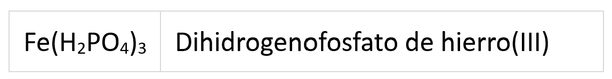
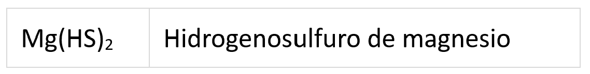
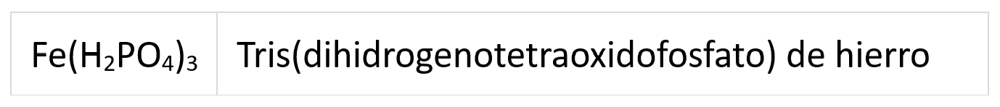
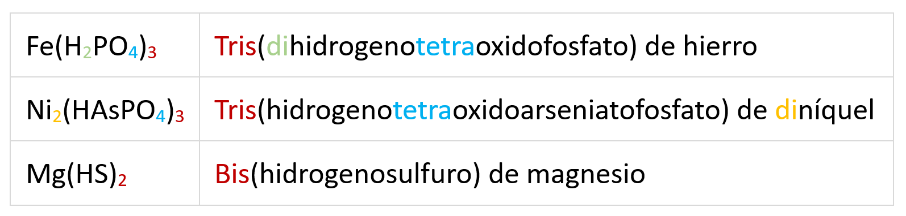
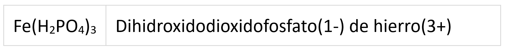
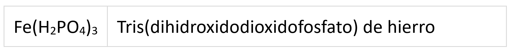

Todas las sales inorgánicas proceden de sus correspondientes ácidos (hidrácidos u oxoácidos) por la sustitución de sus hidrógenos por metales. Cuando la sustitución es total tenemos las sales binarias o las oxosales. Sin embargo, es frecuente que no todos los hidrógenos sean sustituidos sino que algunos de ellos queden en el compuesto final: son las sales ácidas.
Veamos como formularlas y nombrarlas.
Nomenclatura tradicional
Para formular.
Lo veremos con un ejemplo, dihidrogenofosfato de hierro(III). Por una parte, tenemos el catión: Fe3+, a continuación formulamos el anión, en este caso el fosfato, (PO4)3-, a este le añadimos tantos hidrógenos como nos indique el nombre, en este caso 2 H+; teniendo en cuenta que hay una neutralización parcial, el oxoanión ácido quedaría (H2PO4)-. Por último intercambiamos las cargas de catión y anión y simplificamos si es necesario. Con lo que llegaríamos a:

Pongamos otro ejemplo, el hidrógenosulfuro de magnesio. El ion Mg2+ es nuestro catión; el ión sulfuro(2-) es S2-, si a este le añadimos un H+ como nos indica el nombre tendríamos HS-. E intercambiando las cargas:

Para nombrar
La nomenclatura de forma tradicional es bastante complicada como vimos al nombrar de esta forma los oxoaniones, debido, a como comenté, a la variedad de estados de oxidación puestos en juego. Veamos por ejemplo el caso de la sal ácida Fe(H2PO4)3.
El hierro tiene dos estados de oxidación estables: +2 y +3. En este caso vemos que debe tratarse del +3 (en caso de no verlo habrá que probar con cada uno de ellos). El hidrógeno tiene por estado de oxidación +1 y el del oxígeno -2, con ello, y teniendo en cuenta que la sal ácida debe ser neutra, el fósforo actuará con +5, que se corresponde con el sufijo -ato, es decir fosfato. En la nomenclatura tradicional los iones ácido se nombre anteponiendo el número de hidrógenos al nombre tradicional del anión, es decir, dihidrogenofosfato. Completando la fórmula tendríamos: Dihidrogenofosfato de hierro(III)
Intentemos nombrar ahora el Mg(HS)2, de forma tradicional. El magnesio tiene solo un estado de oxidación (+2), el hidrógeno +1 y el azufre le corresponde el estado de oxidación negativo, que es único, -2, que se nombra como sulfuro. Al tener un único hidrógeno el anión ácido se llamará hidrogenosulfuro y la sal en su conjunto: hidrogenosulfuro de magnesio.
Nomenclatura de composición
Para nombrar
A partir de la fórmula: Fe(H2PO4)3.
Utilizamos los prefijos bis, tris, tetrakis, pentakis,...para indicar las veces que se repite el anión ácido. A continuación, entre parentésis indicamos el nombre del anión ácido. Este comienza con el prefijo que indica el número de hidrógenos que tiene la fórmula (di, tri, tetra,...) seguido de hidrogeno (sin tilde) y seguido del prefijo que indica el número de oxígenos (di, tri, tetra,...) seguido de la palabra oxido y de nuevo seguido del nombre del elemento siempre acabado en ato. Por último se indica el prefijo (si es necesario) del número que indique la cantidad del elemento metálico. En definitiva:

Para formular
Lo vemos con unos ejemplos:

Nomenclatura de adición (no la veremos este año)
Para formular
Formulamos el catión y el anión por separado e intercambiamos las cargas. El anión es un poco más complicado, pondremos tantos grupos hidróxido y de oxigeno como nos indique la fórmula y después los reordenaremos para obtener la expresión habitual del anión ácido, es decir, hidrógenos, elemento y oxígeno. Veamos un ejemplo: dihidroxidodioxidofosfato(1-) de hierro(3+).
Por una parte tenemos Fe3+ y por otra [(OH)2O2P]- que es lo mismo que (H2PO4)-, intercambiando los estados de oxidación nos queda:

Una alternativa a usar la carga de los iones es usar los prefijos característicos de la repetición de iones (bis, tris, tetrakis,...):
Para nombrar
A partir de la fórmula: Fe(H2PO4)3
Debemos reorganizar el anión para que en la fórmula aparezcan los grupos hidróxido (OH), seguidos de los óxidos O y por último el elemento. (OH)2O2P La nomenclatura del anión se basa en indicar mediante prefijos el número de grupos hidróxido y óxido que lleva el anión terminando el nombre con la raíz del elemento acabado siempre en ato y añadiendo la carga del anión. En este caso, dihidroxidodioxidofosfato(1-). El nombre se completa añadiendo la carga del catión si es necesario:
